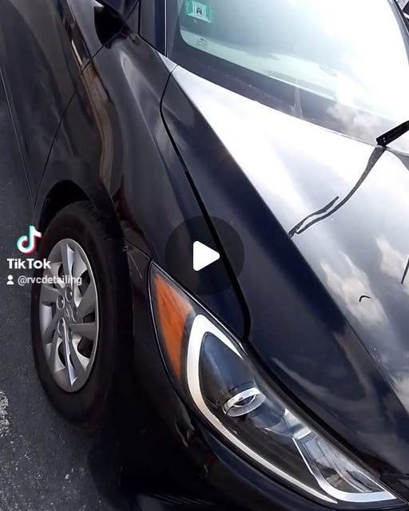
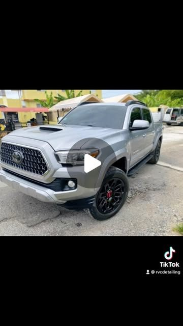
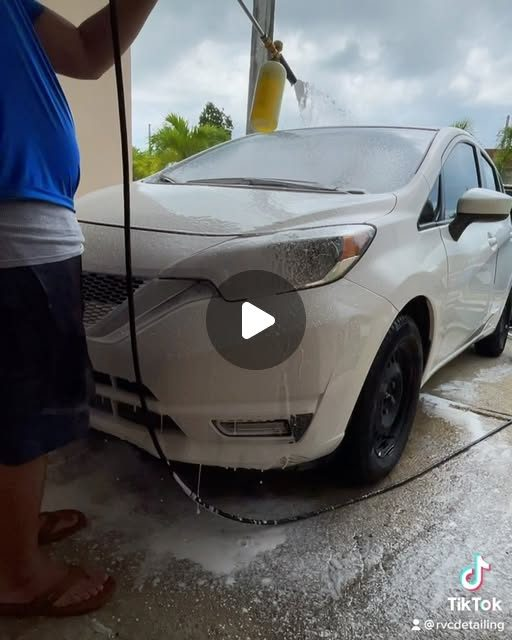
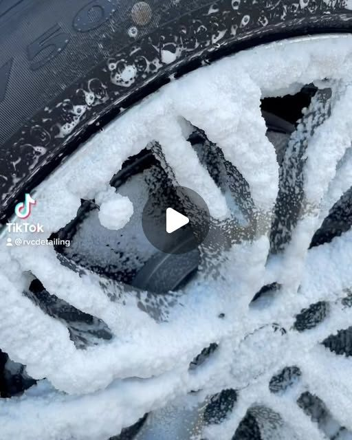
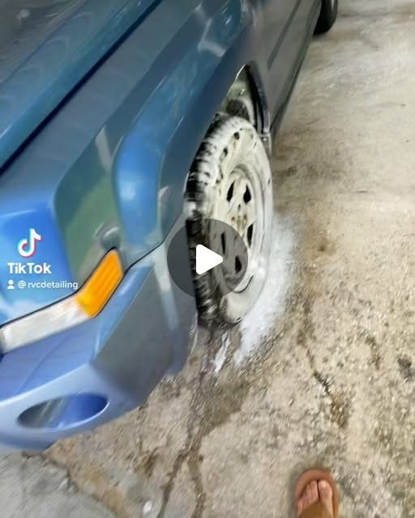
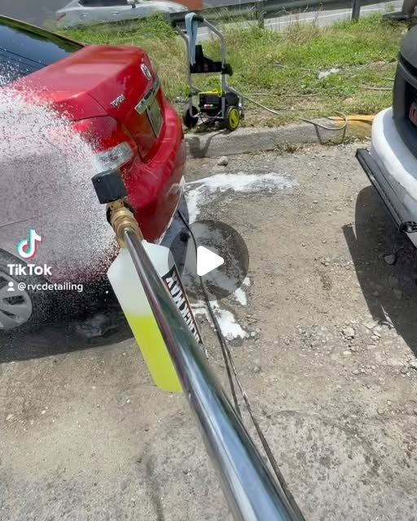

Restauración de focos
Focos opacos o amarillentos que vuelven a verse cristalinos. Lijado, pulido y sellado para que la luz salga con fuerza y el carro recupere su cara.
Nuestra especialidad⚡ Humacao · Puerto Rico
Especialistas en restauración de focos y lavado detallado. Servicio a domicilio.
Nuestros trabajos
Restauraciones de focos y lavados detallados hechos por nosotros.






Haz de luz
Tres servicios, un solo estándar: que tu carro se vea como nuevo.
Focos opacos o amarillentos que vuelven a verse cristalinos. Lijado, pulido y sellado para que la luz salga con fuerza y el carro recupere su cara.
Nuestra especialidadLavado profundo con atención al detalle: carrocería, cristales, aros y cada rincón tratado a mano. Nada de máquina rápida.
Detalle realNo tienes que moverte. Coordinamos por WhatsApp y llevamos el detailing hasta donde esté tu vehículo.
Vamos a tiDel opaco al cristal
Por WhatsApp al 939-254-7226. Cuéntanos qué necesita tu carro y te orientamos.
Agendamos el servicio en el taller o a domicilio, según te convenga.
Restauración de focos o lavado detallado, paso a paso y sin prisa, hasta que quede de exhibición.
Recibes tu vehículo transformado. La luz, el brillo y el detalle hablan solos.
Sobre nosotros
Especialistas en restauración de focos: lijado, pulido y sellado que les devuelve la claridad. También lavado detallado a mano y servicio a domicilio — aquí no solo limpiamos, prendemos la luz de nuevo.
Hablar con nosotrosPreguntas frecuentes
Es el proceso de devolverle la claridad a los focos opacos o amarillentos: se lijan, se pulen y se sellan para que la luz vuelva a salir con fuerza y el carro recupere su look.
Sí, ofrecemos servicio a domicilio. Coordinamos por WhatsApp al 939-254-7226 y llevamos el servicio hasta donde esté tu vehículo.
Estamos en la Carretera 923 Km 1.8, en Humacao, Puerto Rico.
Escríbenos por WhatsApp al 939-254-7226 o toca el botón flotante. Cuéntanos qué necesita tu carro y coordinamos la cita.
Un lavado profundo con atención al detalle: carrocería, cristales, aros y cada rincón tratado con cuidado, no un lavado rápido de máquina.
Oferta por tiempo limitado
Esta página la creó Manupro. Elige tu plan y escríbenos por WhatsApp para empezar.
$300 $99
$600 $150
$1,000 $200
Contacto